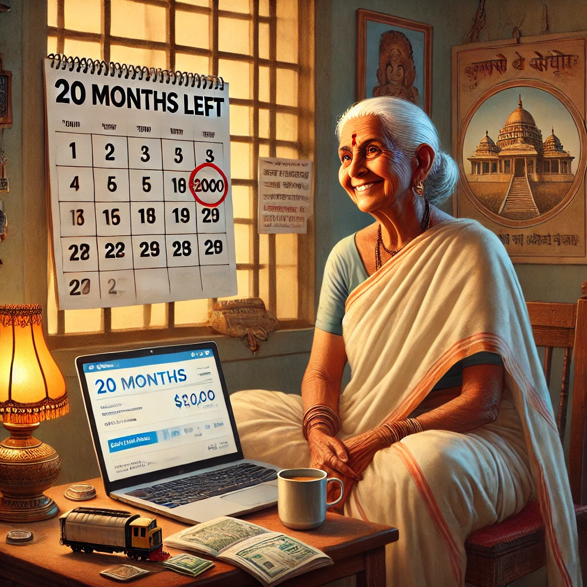

Two Billion in the Bank, and a Clock That Won’t Blink
“As long as your salary pings, your family sings. But when your pay stops, the affection drops.” — Bhaja Govindam 2.0, Verse of Modern Sorrows
“Close your trading app and open your heart, fool—Govinda’s not listed on the stock exchange.” — Bhaja Govindam (Modern Annotated Version)
Ah, human life—that bizarre comedy where we spend our prime years chasing things we’ll never take with us, like titles, Teslas, and Twitter followers. Welcome to Bhaja Govindam 2.0—where spiritual urgency meets salary obsession, and everyone’s too busy to notice they’re terminal.
Let’s meet our three star performers in this tragicomic finale.
1. Shalini: 200K and 20 Months to Go
Shalini, aged 68, has $200,000 saved, one titanium hip, and 20 months to live (according to a very polite but definitive medical report due to her impending condition.). She lives modestly, shops with coupons, and still argues with her sister over who should’ve inherited the brass lamp from their grandmother.
She doesn’t have private jets, but she’s got airline miles and a passport. She travels to Guruvayoor, does a bit of yoga, writes in a gratitude journal, and occasionally cries watching old Sivaji Ganesan and MGR movies.
She knows she’s going. So she’s living.
2. Vikram : 20 Million and 2 Months to Go

Vikram, 52, made his money in fintech. He has $20 million, a villa in Goa, and two months on the clock. He wakes at 5 AM, meditates furiously, then screams at his team on Slack.
He has scheduled his remaining life like an overworked wedding planner: 6 AM juice cleanse, 8 AM legal call, 10 AM Ayurvedic consultation, and 3 PM estate planning with three ex-wives.
Still, he checks his net worth daily. Still believes there’s “one last pivot” he could pull.
He’s rich. But utterly bankrupt in time.
3. Susan: 2 Billion and 2 Weeks
Susan, 39, a billionaire tech mogul, has two weeks left. She built empires, funded space rockets, and has a fridge that talks to her. But now, all the biometric scans and genetic hacks have failed her.
Death, it seems, wasn’t on the payroll.
She stares at her Rolex with disbelief—it keeps ticking, but not for her.
She considers taking a final vacation. But to where? Her soul has been in airplane mode for years.
She spends her last week drafting a legacy speech for the next Big AI conference. It gets 3.2 million likes.
She dies alone. Even her Apple Watch doesn’t say goodbye.
So, who lived wisely?
The one with just enough and a clear view of the exit?
The one who had wealth but no window?
Or the one who had the world and forgot to taste it?
We chase promotions, pensions, partnerships... but never pause. And then one day, the body pings “Final shutdown initiated.”
Money isn’t evil. But mistaking it for immortality? That’s foolish.
So, Bhaja Govindam—Seek Govinda, not just growth.
1. Original:
“बालस्तावत्क्रीडासक्तःतरुणस्तावत्तरुणीसक्तः॥”
“Childhood’s lost in play, youth in passion, old age in worry—no one’s anchored in the Supreme.”
Modern take:
“We play with toys, chase bodies, hoard pills—and still forget to chase truth.”
2. Original:
“ दिनयामिन्यौ सायं प्रातःशिशिरवसन्तौ पुनरायातः॥”
“Day and night, seasons return; time plays, life ebbs—but desire refuses to leave.”
Modern take:
“Time’s moving on like Netflix autoplay, but your wishlist just won’t quit.”
3. Original:
“अ रथमन रथ भावय नि तंना सि ततः सुखलेशः सतम्॥”
“Wealth brings endless trouble. There’s no true happiness in it.”
Modern take:
“The more zeros you chase, the more meaning you lose.”
4. Original:
“वयसि गते कः कामविकारःशुष्के नीरे कः कासारः॥”
“When youth is gone, where is lust? When the water dries, what’s the point of a lake?”
Modern take:
“A sports car at 80? That’s just a fancy wheelchair with horsepower.”
5. Original:
“कातेकाना कसेपुतः संसारोऽयमतीव वि चि तः”
“Who is your beloved? Who is your son? This worldly play is strangely woven.”
Modern take:
“You tag people in posts and call them ‘mine’—till the algorithm resets your feed.”
6. Original:
“भज गोविन्दं भज गोविन्दंगोविन्दं भज मूढमते”
“Worship Govinda, O foolish mind!”
Modern take:
“Close your trading app and open your heart, fool. Govinda’s not listed on the stock
exchange.”
7. Original:
"मा कुरु धन-जन-यौवन-गर्वंहरति निमेषात्कालः सर्वम् ।"
"Do not take pride in wealth, people or youth, time destroys all in a blink"
Modern take:
“Even your Wi-Fi password won’t outlive you. What makes you think your bank account
will?”
And When the Clock Finally Stops…
They chased titles, hoarded zeroes, upgraded phones, and downgraded conversations.
They insured their cars, their homes, their jewelry— but not their souls.
Shalini left with a worn-out sari, a train ticket to Kashi, and a quiet smile.
Vikram left with a Himalayan coffin, three disputed wills, and a forgotten password list.
Susan left with 3.2 million likes, brilliant PowerPoint pitch decks and not a single hand to hold.
And death? It came uninvited, unimpressed, and unnegotiable.
“When breath leaves the body, wealth becomes a stranger, family turns away, and only truth remains.” — Bhaja Govindam
So pause—not your video, not your stock feed—pause your delusion.
Look around and ask: “What will be mine when I am no longer me?”
Because in the end:
Time will cash every cheque.
Ego will be taxed at 100%.
And karma?
Every action files its own tax return.
Karma is just the clerk at the cosmic counter.